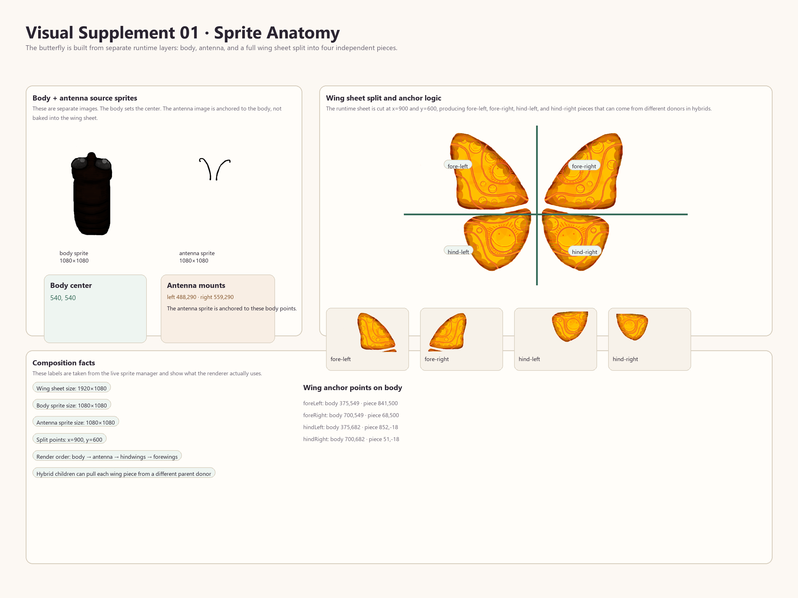
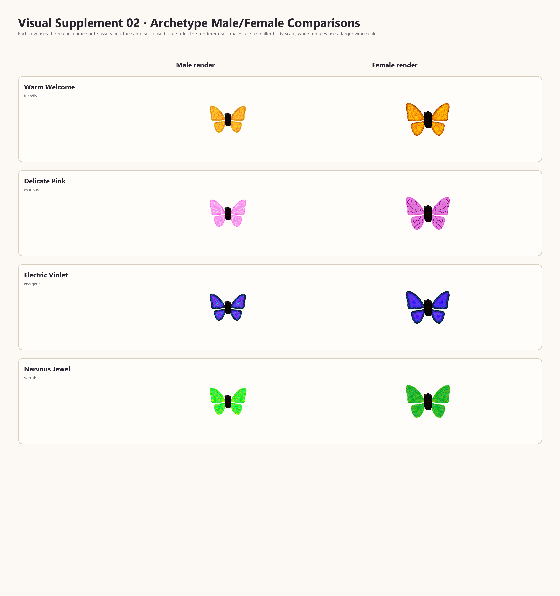
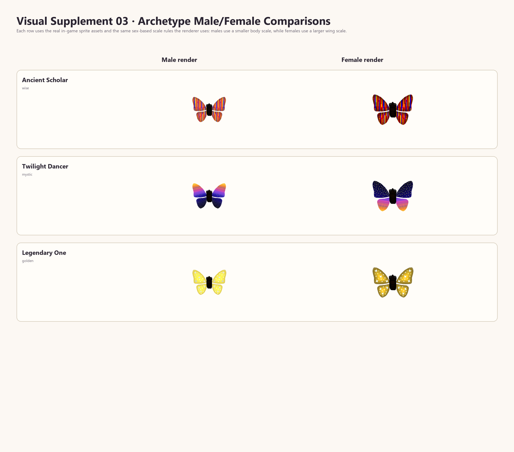
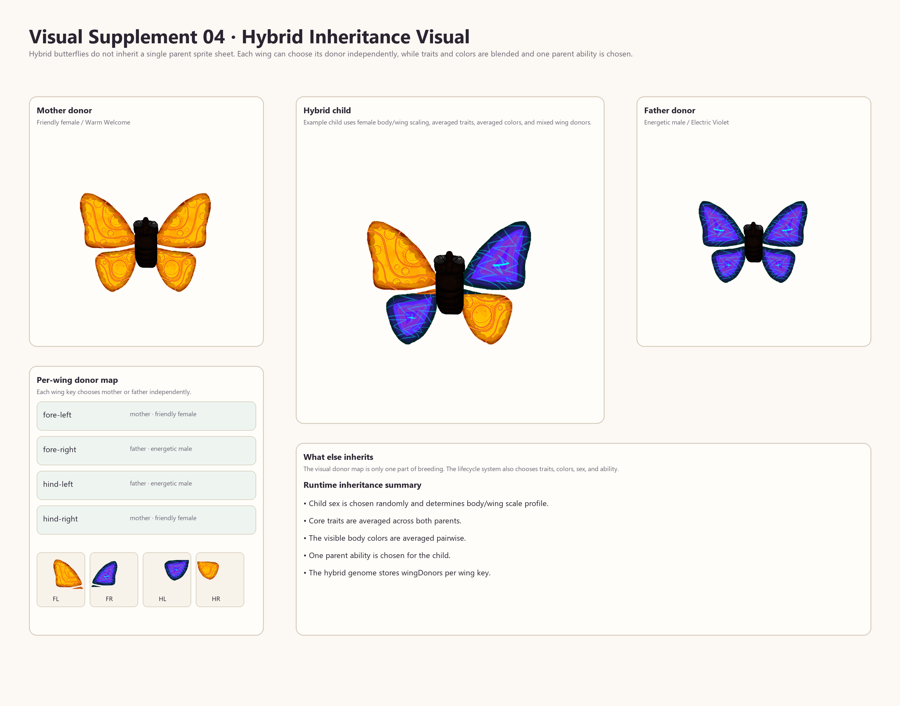
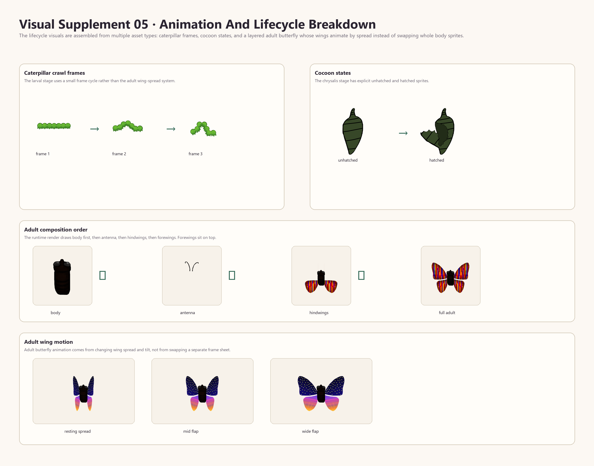

Papilionem Complete Guidebook
Built from the current implemented milestone branch on 2026-04-12.
This guidebook is meant to do two jobs at once:
- teach an average player or tester how the game works
- preserve the exact internal logic, tuning, and system boundaries for future reference
Table Of Contents
1. Guide Overview And How To Use This Book
Who this is for
- players who want to understand what they are seeing
- testers who need to reproduce and describe behavior
- developers who need exact system logic and tunable values
- future-you when you want one place that explains the whole project
How it is organized
- the early sections are plain-language and player-facing
- the middle sections explain the life-simulation model
- the later sections cover persistence, audit tools, battle, and assets
- the appendix contains exact config values pulled from code
2. What The Game Is And How It Flows
visuals only"] UI["GameUI"] Interaction["InteractionSystem"] end subgraph LS["Life-Simulation Owners"] Status["StatusSystem"] Behavior["BehaviorSystem"] Object["ObjectSystem"] Sleep["SleepSystem"] Teaching["TeachingSystem"] Breeding["BreedingSystem"] end subgraph DS["Debug / Audit / Persistence"] Save["SaveSystem"] Progression["ProgressionManager"] Telemetry["TelemetrySystem"] Debug["DebugUI"] end subgraph BS["Battle Snapshot Layer"] Battle["BattleSystem"] end Core --> Zone Core --> Render Core --> UI Core --> Interaction Core --> Status Core --> Behavior Core --> Object Core --> Sleep Core --> Teaching Core --> Breeding Core --> Save Core --> Progression Core --> Telemetry Core --> Debug Save --> Durable Core -. snapshot / commit .-> Battle
Papilionem is a living-garden simulation first. The butterflies are not just decorative sprites. Each one carries a persistent internal model that shapes how it moves, whom it trusts, how it learns, how it sleeps, and what it can pass on to offspring.
High-level flow
3. All Controls
Normal play controls
Normal controls
| Setting | Value |
|---|---|
Any key / click | Leave title screen and enter garden |
D | Toggle debug mode |
B | Show boundary overlay while held |
C | Open butterfly collection / journal |
I | Open inspect panel |
A | Open accessibility panel |
M | Toggle reduced motion |
T | Cycle trail visibility |
G | Cycle background atmosphere |
H | Toggle high-contrast UI |
S | Toggle battle motion simplify |
Left / Right | Change collection page |
R | Rename current hybrid in collection |
Debug and audit controls
Debug controls
| Setting | Value |
|---|---|
Arrow keys | Move debug cursor on isometric grid |
Q / E | Cycle debug tools |
Space | Place current debug tool |
X | Export zone data |
K | Save game state |
L | Load game state |
V | Verify save/load roundtrip |
N | Compare recent snapshots |
P | Load next audit preset |
O | Export audit setup |
U | Import audit setup |
Y | Run gameplay audit |
J | Reseed replay session |
4. World, Camera, Rendering, And Readability
The shipped build is a single-zone foundation, but the systems are already built as if the world can grow into multiple zones later. The camera and render layer know about view modes and readability rules.
- Focused garden mode allows more background motion and decorative presence.
- Overview mode suppresses moving background effects so the garden stays readable from afar.
- Battle mode removes moving background effects and afterimage trails so tactical readability wins over decoration.
- Accessibility toggles can further reduce motion, raise contrast, and simplify visual density.
5. Entities And Lifecycle Objects
Butterflies
Butterflies are the main living agents. They hold personality traits, a life-simulation state, ability state, breeding state, social history, and long-term progression visibility.
Flowers
Flowers are consumable, non-carryable garden objects with their own lifecycle. They bloom, mature, wilt, and dissolve. They can also become lifecycle hosts for eggs and chrysalis stages.
Flower lifecycle defaults
| Setting | Value |
|---|---|
stageDurations.bloom | 1200 frames (~20s at 60fps) |
stageDurations.mature | 2400 frames (~40s) |
stageDurations.wilting | 1200 frames (~20s) |
stageDurations.dissolve | 360 frames (~6s) |
flower types | daisy, tulip, bush, lavender, sprout |
resource tags | nectar, care, garden-object |
Caterpillars
Caterpillars are a real intermediate life stage, not just a note in the breeding system. They seek a food flower first, then seek a second flower to become a chrysalis host. If they fail to find what they need in time, they can starve and die.
Caterpillar behavior defaults
| Setting | Value |
|---|---|
initial phase | seekingFood |
follow-up phase | seekingChrysalis |
phase timeout | 10800 frames (~3 minutes) |
speed | 0.35 |
lifecycle.stage | larval / phase-driven |
6. What The Player Actually Changes
The player does not command butterflies directly like an RTS unit. The core player influence is the cursor and the conditions the player creates around the garden.
- A calm cursor can build gentle hover interactions and trust-related memory.
- A fast cursor can startle butterflies and create danger memory.
- Feeding and flower contact create object and outcome memories.
- Debug mode can directly create scenarios, but normal play mostly nudges the living systems rather than bypassing them.
7. Archetypes, Traits, Abilities, And Spawn Logic
Butterfly roster
| Setting | Value |
|---|---|
friendly | warm, trusting, support-oriented |
cautious | delicate, patient, sparkle-oriented |
energetic | fast, excitable, state-boosting |
skittish | nervous, reactive, trust-cascade capable |
wise | calm, teaching-oriented |
mystic | sleep-comfort and calm aura oriented |
golden | special legendary presence |
hybrid | bred mixture with inherited traits and one parent ability |
Shared trait axes
| Setting | Value |
|---|---|
speed | movement feel and pacing |
jitteriness | movement noise and nervousness |
trustPropensity | how likely trust is to build |
trustSpeed | how quickly trust changes |
scareThreshold | how easy it is to scare the butterfly |
happinessBonus | how strongly positive outcomes raise mood |
Ability mapping
| Setting | Value |
|---|---|
friendly | Warm Welcome: healing and panic support aura |
cautious | Delicate Pink: sparkle / flower-oriented presence |
energetic | Electric Violet: movement speed and energetic state boost |
skittish | Nervous Jewel: trust cascade on care event |
wise | Ancient Scholar: teaching pulse and lesson support |
mystic | Twilight Dancer: sleep comfort and recovery support |
golden | legendary special crown state |
hybrid | one chosen parent ability inherited into hybrid genome |
Current base spawn weights
| Setting | Value |
|---|---|
friendly | 40 |
cautious | 15 |
energetic | 15 |
skittish | 10 |
wise | 10 |
mystic | 10 |
golden | special, not part of normal weighted spawn |
8. The Neuro-Social Life-Simulation Model
entityType
archetype
source"] LS --> Drives["drives
selfMaintenance
safetyAvoidance
resourceControl
socialConnection
caregiving
exploration
statusExpression
rest"] LS --> Emotions["emotions
threat
relief
attachment
rejection
significance
failure
curiosity
agitation
exhaustion"] LS --> Memories["memories
place
object
interaction
outcome
routine
social
danger
care"] LS --> Social["socialEdges
trust
comfort
attachment
dependence
rivalry
resentment
admiration
protectiveness"] LS --> Routines["routines
movement
social
care
resource
rest
vigilance
teaching"] LS --> Interpretation["interpretation
clarity
lastSignals
warpedSignals"] LS --> Distortion["distortion
traumaBias
anxietyBias
withdrawalBias
fixationBias
insomniaBias
oversleepBias
warpedTeachingBias"] LS --> Genetics["genetics
source
baselineTraits
inheritedTraits
heritageTags
lineageIds"] LS --> Upbringing["upbringing
imprintSources
lessons
routineReinforcement"] LS --> Lifecycle["lifecycle
stage
ageTicks
deathState
upbringingState"]
This is the heart of the game. Every major living agent is represented by a structured life-simulation state.
Drives
Drives are long-running pressures: self-maintenance, safety avoidance, resource control, social connection, caregiving, exploration, status expression, and rest.
Emotion channels
Emotion channels are current-state readings such as threat, relief, attachment, rejection, significance, failure, curiosity, agitation, and exhaustion.
Memory packets
Memories are concrete packets, not vague story text. Each packet has a family, subject, valence, strength, recency, reinforcement count, emotional tags, and metadata.
Social edges
Social edges are longer-term relationship summaries: trust, comfort, attachment, dependence, rivalry, resentment, admiration, and protectiveness.
Routines
Routines are reinforced habits: movement, social, care, resource, rest, vigilance, and teaching.
Interpretation and distortion
Interpretation tracks clarity and signal handling. Distortion biases such as trauma, anxiety, insomnia, or warped teaching do not create separate disconnected systems. They bend the shared systems over time.
9. Sleep, Oversleep, Comfort, And Wake Rules
Sleep is a full system with owned state transitions. Butterflies do not just have a boolean asleep flag. They can be settling, normally asleep, oversleeping, or in forced battle sleep.
- Exhaustion grows passively while awake.
- Rest drive, insomnia bias, and comfort influence how easy it is to settle.
- Sleep assist sources and sleep-related status modifiers increase comfort or recovery.
- Oversleep is not random noise; it is driven by oversleep pressure and oversleep bias.
- Forced battle sleep is intentionally separated from normal garden sleep so battle effects do not accidentally use oversleep rules.
Stored sleep state fields
| Setting | Value |
|---|---|
subtype | current sleep subtype or null |
exhaustion | current exhaustion value |
sleepPressure | rest-drive-linked sleep pressure |
sleepComfort | comfort gathered from assists and statuses |
wakeDrive | wake pressure against staying asleep |
oversleepPressure | pressure to remain asleep longer than needed |
oversleepHabit | distortion-linked oversleep predisposition |
assistSources | queued sleep assists for this update |
settlingSeconds | time spent settling |
asleepSeconds | time spent asleep |
lastSleepStartSeconds | last sleep start timestamp |
lastWakeSeconds | last wake timestamp |
lastWakeReason | why the entity woke up |
10. Teaching, Trust, Routines, And Social Pacing
Teaching is a real continuity system. A wise butterfly's aura begins a lesson, the lesson runs for a tunable duration, then the result is turned into a packet, upbringing note, social memory, edge adjustment, and routine reinforcement.
A skittish butterfly's trust cascade is also persistent. It does not just flash a temporary effect; it creates memory and relationship fallout in nearby butterflies.
- Flower visits can create object and outcome memory plus resource-routine reinforcement.
- Following the player cursor can create trusted-cursor interaction memory.
- Being scared by the player cursor can create danger memory tied to the cursor.
- Teaching can raise interpretation clarity and teaching-related routine strength.
11. Genetics, Breeding, Lineage, And Upbringing
Breeding is not a single spawn action. It is a staged lifecycle: attraction, mating, pregnancy, egg placement, caterpillar, chrysalis, adult hybrid, and journal entry.
- Males and females must both be eligible, free, and within pheromone radius.
- Distance chooses the best attraction match among eligible pairs.
- Pregnancy is assigned to the female and targeted toward an appropriate flower.
- Egg and cocoon hatch timing is tunable and stored.
- Hybrid adults inherit averaged core traits, blended colors, one chosen parent ability, and independently chosen wing donors.
Hybrid lifecycle artifacts
| Setting | Value |
|---|---|
pregnancy | stored on female butterfly until egg lay |
lifecycleData | carries lineage and inheritance context through egg, caterpillar, and chrysalis stages |
hybridGenome | stored on resulting hybrid butterfly |
hybridJournal entry | stored in progression data and collection layer |
12. Progression, Collection, And Hybrid Journaling
The progression layer turns the simulation into an archive. It stores encountered butterflies, collected butterflies, collection stats, hybrid journal entries, and the next hybrid id. The journal also supports renaming hybrids so discoveries feel personal and trackable.
Progression storage
| Setting | Value |
|---|---|
encounteredButterflies | set of seen types |
collectedButterflies | set of collected types |
butterflyCollectionStats | aggregate collection stats |
hybridJournal | ordered hybrid entry list |
nextHybridId | next journal id counter |
13. Internal Logic Ownership And Boundaries
One owner per truth is the main internal safety rule. This is how the game avoids double-applying logic or letting two systems disagree about the same state.
Owner map
| Setting | Value |
|---|---|
ZoneSystem | world zones, focus, and mode context |
StatusSystem | timed effects, auras, cooldowns, charges, immunities, and aggregated modifiers |
BehaviorSystem | current action runtime and target choice |
ObjectSystem | carry, drop, delivery, and object ownership |
SleepSystem | sleep transitions and sleep visual state inputs |
TeachingSystem | lesson packets, trust cascades, social teaching fallout |
BreedingSystem | mating, pregnancy, eggs, caterpillars, chrysalis, adult hybrid spawn |
SaveSystem | durable serialization and migration |
TelemetrySystem | update/render metrics |
RenderManager | visuals only |
BattleSystem | isolated battle snapshot layer |
14. Save / Load, Replay, Audit, And Telemetry
Persistence in Papilionem is designed around durable truth plus rebuilt derived state. Butterflies, flowers, caterpillars, progression, runtime values, and system-owned durable sub-states are serialized. Cheap derived values are reconstructed after load.
- SaveSystem captures butterfly, flower, and caterpillar state plus progression and selected runtime values.
- Sleep state is synchronized into life-sim lifecycle fields before save so the durable record stays honest.
- Roundtrip verification saves, reloads, rebuilds, and compares durable truth.
- Gameplay audit chains snapshots, invariant checks, and persistence checks into one pass.
- Replay metadata tracks session ids, seeds, and audit markers for reproducibility groundwork.
Telemetry
Telemetry records recent update and render samples, including total update time, foundation time, entity time, particle time, render time, particle render time, entity counts, time scale, and view mode. It is meant to support optimization without changing game truth.
15. Battle Snapshot Layer
HP / pressure / cooldowns / commit memories"] Commit["Selective commit payload"] Garden2["Live garden entities updated"] Garden -. read only .-> Snapshot --> Resolve --> Commit --> Garden2
Battle is intentionally isolated from the garden. When a battle starts, live entities are cloned into a battle snapshot. HP changes, pressure, retreat, cooldown spending, charge spending, and battle-generated social or memory outcomes are all recorded inside that snapshot first.
Only selected results are committed back into the live garden state. This keeps battle experimentation from corrupting normal simulation truth.
16. Sprite And Asset Pipeline
Runtime rendering uses the repository's asset folders, while the sprite manager slices, cleans, and composes those assets into renderable butterflies and lifecycle visuals.
Sprite pipeline
| Setting | Value |
|---|---|
butterfly wing base path | assets/butterflies/ |
wing file organization | separate male/female full wing composites per archetype |
body sprite | ephemera-butterfly-body-.png |
antenna sprite | ephemera-butterfly-antenna.png |
cocoon sprites | assets/cocoons/cocoon-unhatched.png and cocoon-hatched.png |
caterpillar frames | assets/caterpillars/caterpillar-crawl1/2/3.png |
wing split point | x=900, y=600 |
background cleanup rule | near-black pixels converted to transparent |
The render spec for hybrids can mix wing donors per wing, so hybrid visuals are not limited to a single parent's full wing set.
17. Visual Supplement: Sprite Anatomy, Archetypes, Hybrids, And Lifecycle
This section uses the actual runtime sprite assets from the project to show how the butterfly visuals are built, how the male and female versions differ at render time, how hybrids mix donor wings, and how the caterpillar-to-cocoon-to-adult lifecycle is displayed.
- The anatomy plate shows the body sprite, antenna sprite, wing sheet split points, and anchor facts used by the sprite manager.
- The comparison plates show assembled in-game male and female renders for every archetype, not just raw wing sheets.
- The hybrid plate uses mixed donor wings so the visual inheritance logic can be read at a glance.
- The lifecycle plate shows caterpillar frames, cocoon states, adult composition order, and wing-spread-based adult motion.





18. Exact Tunable Config Tables
These tables are generated from the live core/config.js structure so the guidebook reflects the implemented values instead of a hand-maintained copy.
Rendering
| Setting | Value |
|---|---|
useSprites | true |
butterflyVisualScale | 1.6 |
Canvas
| Setting | Value |
|---|---|
baseWidth | 800 |
baseHeight | 450 |
targetWidth | 800 |
targetHeight | 450 |
backgroundColor | #f4e8dc |
Grid
| Setting | Value |
|---|---|
cellSize | 16 |
gridWidth | 18 |
gridHeight | 18 |
debugGridSize | 32 |
gridOffset.x | 10 |
gridOffset.y | 8 |
Isometric
| Setting | Value |
|---|---|
tileWidth | 18 |
tileHeight | 9 |
offsetX | 400 |
offsetY | 100 |
bounds.minX | 0 |
bounds.maxX | 17 |
bounds.minY | 0 |
bounds.maxY | 17 |
Entities: limits and defaults
| Setting | Value |
|---|---|
maxButterflies | 12 |
maxFlowers | 6 |
heightOffset.butterfly | 10 |
heightOffset.flower | 0 |
heightOffset.pixel | 0 |
butterfly.size | 12 |
butterfly.speed | 0.008 |
butterfly.wanderTimer.min | 40 |
butterfly.wanderTimer.max | 90 |
butterfly.maxWanderDistance | 3 |
butterfly.lifetime | 10000 |
butterfly.personalities | brave, cautious, curious |
butterfly.colors | 255, 140, 60, 255, 220, 120, 220, 100, 150, 255, 180, 200, 150, 120, 200, 200, 170, 255, 100, 180, 140, 150, 220, 180 |
flower.types | daisy, tulip, rose, sunflower, lily |
flower.stemHeight | 16 |
flower.stageDurations.bloom | 1200 |
flower.stageDurations.mature | 2400 |
flower.stageDurations.wilting | 1200 |
flower.stageDurations.dissolve | 360 |
flower.palettes | {"petals":[255,180,120],"center":[255,240,180]}, {"petals":[255,150,200],"center":[255,255,220]}, {"petals":[200,150,255],"center":[255,230,150]}, {"petals":[255,220,150],"center":[255,255,200]}, {"petals":[180,220,255],"center":[255,255,240]} |
Particles
| Setting | Value |
|---|---|
maxParticles | 100 |
gravity | 0.1 |
pixelSize | 2 |
bounce | 0.3 |
friction | 0.99 |
types.scale.lifetime | -1 |
types.scale.fadeSpeed | 0 |
types.joy.lifetime | 255 |
types.joy.fadeSpeed | 2 |
types.stress.lifetime | 180 |
types.stress.fadeSpeed | 3 |
types.happy.lifetime | -1 |
types.happy.fadeSpeed | 0 |
types.happy_visual.lifetime | 200 |
types.happy_visual.fadeSpeed | 1 |
Color pools
| Setting | Value |
|---|---|
radius | 20 |
requiredPixels | 50 |
pulseSpeed | 0.1 |
spawnDelay | 180 |
gridSize | 40 |
Interaction
| Setting | Value |
|---|---|
stillFramesRequired | 120 |
cursorZoneRadius | 30 |
butterflyZones.brave.comfort | 60 |
butterflyZones.brave.flee | 40 |
butterflyZones.cautious.comfort | 100 |
butterflyZones.cautious.flee | 80 |
butterflyZones.curious.comfort | 80 |
butterflyZones.curious.flee | 60 |
Effects
| Setting | Value |
|---|---|
shadowOpacity | 50 |
glowPulseSpeed | 0.1 |
swaySpeed.min | 0.02 |
swaySpeed.max | 0.03 |
swayAmount | 0.1 |
Debug
| Setting | Value |
|---|---|
enabled | false |
showGrid | true |
showZones | true |
showCoordinates | true |
showFPS | true |
gardenTimeControls.enabledInNormalPlay | false |
gardenTimeControls.debugSpeedPresets | 1, 2, 4 |
auditTools.scenarioPresets | true |
auditTools.snapshotDiff | true |
auditTools.invariantChecker | true |
auditTools.eventTimeline | true |
auditTools.saveLoadVerifier | true |
auditTools.screenshotNotes | true |
Accessibility
| Setting | Value |
|---|---|
reducedMotion | false |
battleMotionSimplify | true |
highContrastUI | false |
colorblindSafeIndicators | true |
strongSelectionOutlines | true |
trailVisibility | full |
backgroundAtmosphere | full |
statusIndicatorDensity | simplified |
uiScale | 1 |
Simulation
| Setting | Value |
|---|---|
defaultTimeScale | 1 |
battleTimeScales | 1, 2 |
frameRate | 60 |
fixedDeltaSeconds | 0.016666666666666666 |
Balance: sleep
| Setting | Value |
|---|---|
assistStrengthDefault | 0.15 |
movementMultiplierSettling | 0.25 |
wingAnimationMultiplierSettling | 0.35 |
wingAnimationMultiplierAsleep | 0.08 |
visualYOffsetSettling | 1.5 |
visualYOffsetAsleep | 3 |
visualTiltSettling | 0.08 |
visualTiltAsleep | 0.18 |
passiveExhaustionBaseGain | 0.006 |
passiveExhaustionRestMultiplier | 0.004 |
passiveExhaustionInsomniaMultiplier | 0.002 |
settleThresholdBase | 0.62 |
settleThresholdFloor | 0.28 |
settleThresholdInsomniaMultiplier | 0.08 |
settleThresholdComfortMultiplier | 0.05 |
settlingDurationSeconds | 1.5 |
normalRecoveryBaseRate | 0.032 |
normalRecoveryComfortMultiplier | 0.014 |
oversleepPressureGainMultiplier | 0.02 |
wakeThresholdBase | 0.18 |
wakeThresholdFloor | 0.08 |
wakeThresholdResistanceMultiplier | 0.03 |
wakeMinimumSleepSeconds | 4 |
oversleepThresholdBase | 0.35 |
oversleepThresholdBiasMultiplier | 0.15 |
oversleepRecoveryRate | 0.02 |
oversleepPressureDecayRate | 0.016 |
forcedSleepRecoveryRate | 0.014 |
passiveOversleepPressureDecayRate | 0.004 |
Balance: social
| Setting | Value |
|---|---|
teachingLessonDurationSeconds | 1.6 |
teachingPulseRadius | 76 |
teachingPulseMemoryValence | 0.22 |
teachingPulseMemoryStrength | 0.26 |
teachingPulseEdgeTrust | 0.02 |
teachingPulseEdgeAdmiration | 0.035 |
teachingPulseEdgeComfort | 0.015 |
teachingPulseRoutineReinforcement | 0.025 |
trustCascadeRadius | 132 |
trustCascadeMemoryValence | 0.28 |
trustCascadeMemoryStrength | 0.34 |
trustCascadeEdgeTrust | 0.035 |
trustCascadeEdgeComfort | 0.025 |
trustCascadeEdgeAdmiration | 0.015 |
lessonUpbringingStrength | 0.28 |
lessonRoutineReinforcement | 0.05 |
lessonInterpretationClarityGain | 0.01 |
lessonMemoryValence | 0.36 |
lessonMemoryStrength | 0.4 |
lessonEdgeTrust | 0.03 |
lessonEdgeAdmiration | 0.04 |
lessonEdgeComfort | 0.02 |
listenerTeachingRoutineReinforcement | 0.035 |
teacherTeachingRoutineReinforcement | 0.025 |
teachingBoostFrames | 16 |
Balance: hybrid
| Setting | Value |
|---|---|
pheromoneRadius | 132 |
matingDistance | 16 |
matingDurationFrames | 150 |
pheromoneCooldownFrames | 21600 |
adultHardCap | 50 |
eggHatchFrames.min | 28800 |
eggHatchFrames.max | 39600 |
cocoonHatchFrames.min | 28800 |
cocoonHatchFrames.max | 39600 |
bredFertilityUses | 1 |
World
| Setting | Value |
|---|---|
layout | single-zone-foundation |
overviewMode | false |
viewModes | overview, focused-garden, battle |
zones | {"id":"garden-core","label":"Garden Core","kind":"garden","poolAllowed":true,"doorwayIds":[],"adjacentZoneIds":[],"bounds":{"minX":0,"maxX":17,"minY":0,"maxY":17},"renderProfile":{"movingBackgroundEffectsInFocus":true,"movingBackgroundEffectsInOverview":false,"afterimageTrailsInFocus":true,"afterimageTrailsInBattle":false}} |
Registries
| Setting | Value |
|---|---|
actionFamilies | idle, wander, seek_resource, care_for_vulnerable, teach_or_listen, sleep, socialize, reposition, battle |
statusFamilies | healing_received_bonus, panic_resistance, aggression_suppression, attack_speed_bonus, movement_speed_bonus, energetic_state_boost, reposition_guidance, cooldown_intelligence, sleep_comfort_bonus, wake_resistance, forced_sleep, forced_sleep_immunity, sleep_recovery_multiplier |
sleepSubtypes | settling_sleep, normal_sleep, oversleeping, forced_battle_sleep |
battleStates | inactive, snapshotting, active, resolving, committing |
persistenceFieldClasses.durable | durable |
persistenceFieldClasses.derived | derived |
persistenceFieldClasses.runtime | runtime |
System order
| Setting | Value |
|---|---|
phaseFoundationOrder | zoneSystem, statusSystem, behaviorSystem, objectSystem, sleepSystem, teachingSystem, battleSystem, saveSystem |
19. Glossary
Glossary
| Setting | Value |
|---|---|
Archetype | A base butterfly type such as friendly, wise, or mystic. |
Ability | A special effect identity tied to an archetype or inherited by a hybrid. |
Drive | A long-running pressure such as rest, exploration, or safety. |
Emotion channel | A current-state feeling value such as threat, curiosity, or exhaustion. |
Memory packet | A stored event-like record with valence, strength, and tags. |
Social edge | A durable relationship summary like trust or admiration. |
Routine | A reinforced tendency to behave in a certain way. |
Distortion | A bias that bends shared systems, such as anxiety or insomnia bias. |
LifeSim | The full internal life-simulation state carried by an entity. |
Hybrid genome | The inherited trait and visual source data for a bred hybrid butterfly. |
Roundtrip verify | A save/load comparison that checks whether durable truth survives correctly. |
Gameplay audit | A chained test pass that checks snapshots, invariants, save/load, and visible state. |
Battle snapshot | A battle-local copy of live entities used so battle can mutate safely before commit. |